All textures, environment maps, and materials are allocated and loaded on viewer construction and saved in vectors or unordered maps to be accessed when needed during rendering. More precisely, each material corresponds with a descriptor set that contains bindings for the material's textures, while the environment descriptor set containing all relevant environment information is simply loaded once at the start since it is static. I chose to create an uber shader that manages all the different material types with branch-free logic instead of creating separate shaders for each material type.
Since I'm currently behind on assignments, I've decided to skip the creative task for now. If I have more time I'd want to implement displacement mapping, as well as the the mipmap trick for smoothing the artifacts from importance sampling. The viewer rendering shown in this report is currently using the reference precomputed maps provided rather than the ones generated by my cube utility.
Describe the model and texture you created and include a screen recording showing it running in real-time:
Describe your creation process for the model and texture.
bin/cube path/to/image.ext --kwargs
path/to/image.ext --lambertian|ggx)--lambertian|ggx|lookup --lambertian computes lambertian cube map and stores as RGBE8 in dir/image.lambertian.png--ggx computes precomputed specular mip-maps and stores as RGBE8 in dir/image.1.png through image.N.png--lookup computes lookup table and stores as RG32 in dir/pbr-lookup.bin--outdir dir --size N --lambertian; 512 for --lookup; ignored for --ggx)--samples N
bin/viewer --kwargs
--scene scene.s72 scene.s72
--camera camera_name camera_name.
Starts with the first scene camera loaded in code (or the user camera if there are no scene cameras) by default.
--exposure value value. 0.0 by default.
--tone-map linear|aces linear by default.
--culling none|frustum none by default.
--physical-device device_name --drawing-size w h --headless AVAILABLE dt frame.ppm steps the viewer by given dt and renders one frame.
If frame.ppm is provided, the viewer also saves the rendered frame to frame.ppm.
--timer file file.
I wrote a new function Helpers::load_image_from_file that handles loading an image file into a data vector.
I pass in an enum as one of the arguments to specify the expected output image format so that I can use this function
to handle loading environment maps on top of regular 2D textures. This function is also where I convert from RGBE8 to the data format
expected by VK_FORMAT_E5B9G9R9_UFLOAT_PACK32, which is the data format I chose to use for environment maps on-GPU.
Helpers::create_image and Helpers::transfer_to_image are similarly modified to take in additional parameters
to allow the same function to continue handling different expected image types.
Camera eye position needed to be passed to the fragment shader to support the "mirror" material.
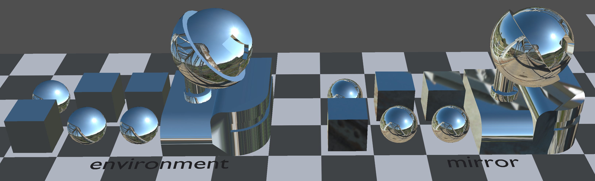
"environment" and "mirror" materials displayed in materials.s72 example scene.
Information about exposure and tone mapping curve to use is passed into the shader as push constants, and the processing is done in the fragment shader after all the radiance calculations are done.
For my custom curve, I chose to implement a ACES filmic curve.
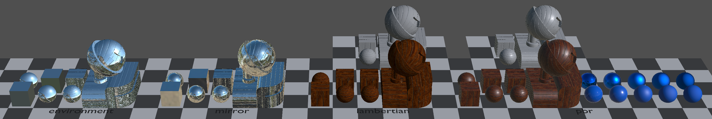
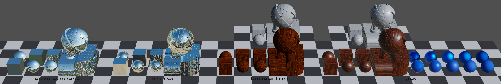
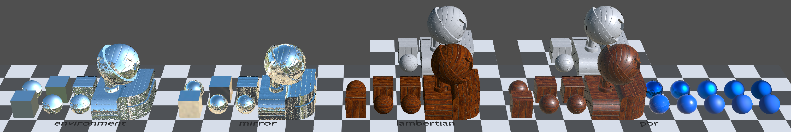
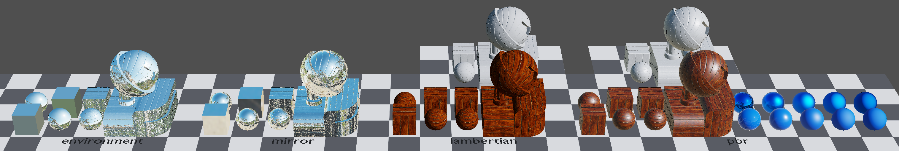
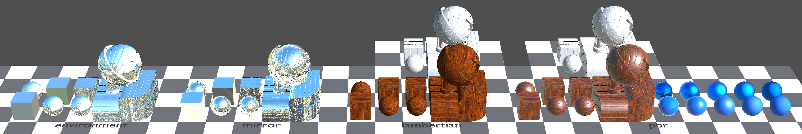
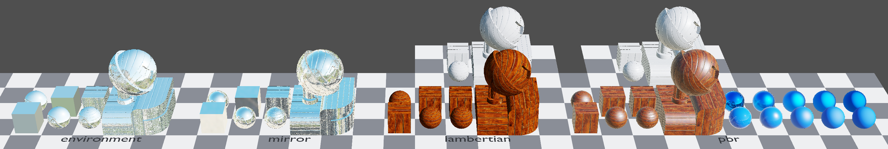
Loading and setting up the required textures for the material is done in
SceneViewer::procompute_scene. Particular scopes of interest are the ones commented
// load all 2d textures in the scene ...// load environment cubemap ...// load material information from scene ...SceneViewer constructor,
with relevant information eventually being bound to the shader in SceneViewer::render.
Pre-filtering the lambertian cube-map is done in the cube utility. I originally did a full integral over the input environment on the CPU, but later switched to using using importance sampling on the GPU to make implementation consistent with that for PBR.
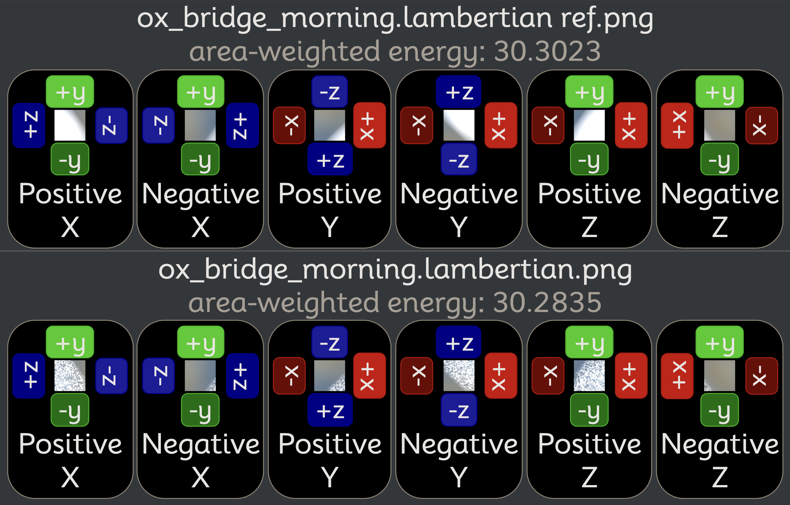
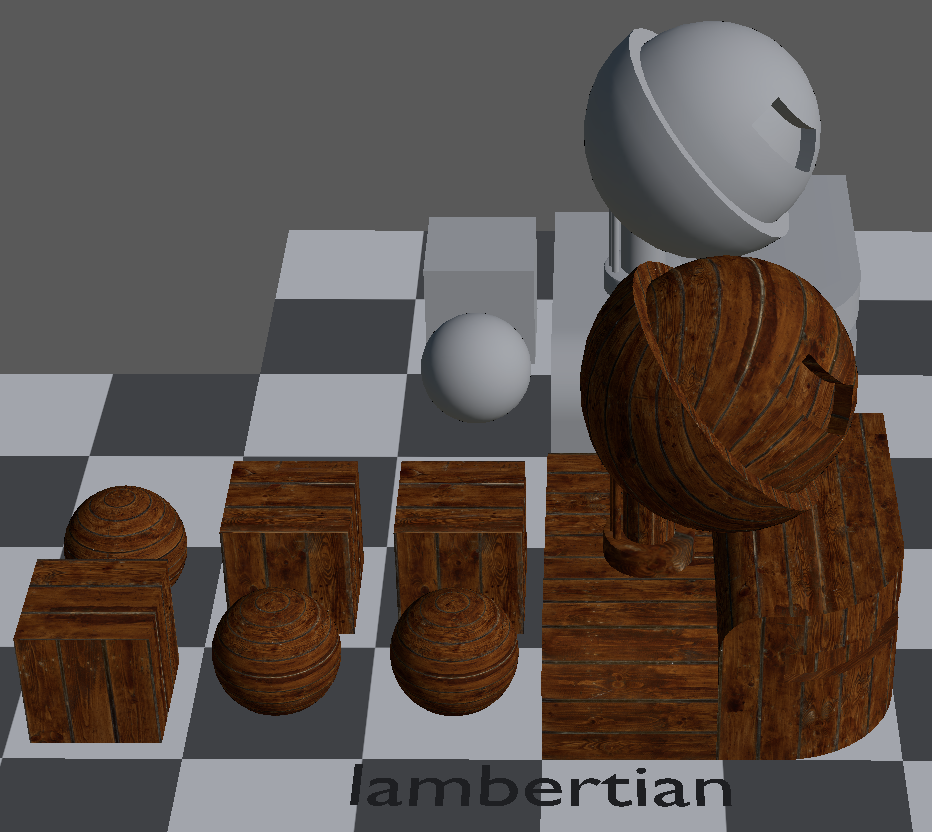
"lambertian" material displayed in materials.s72 example scene.
Texture loading for normal mapping is done in the same way and place as detailed from lambertian diffuse above. Within the fragment shader, the normal map is used to add further detail to the normal received from the vertex shader.
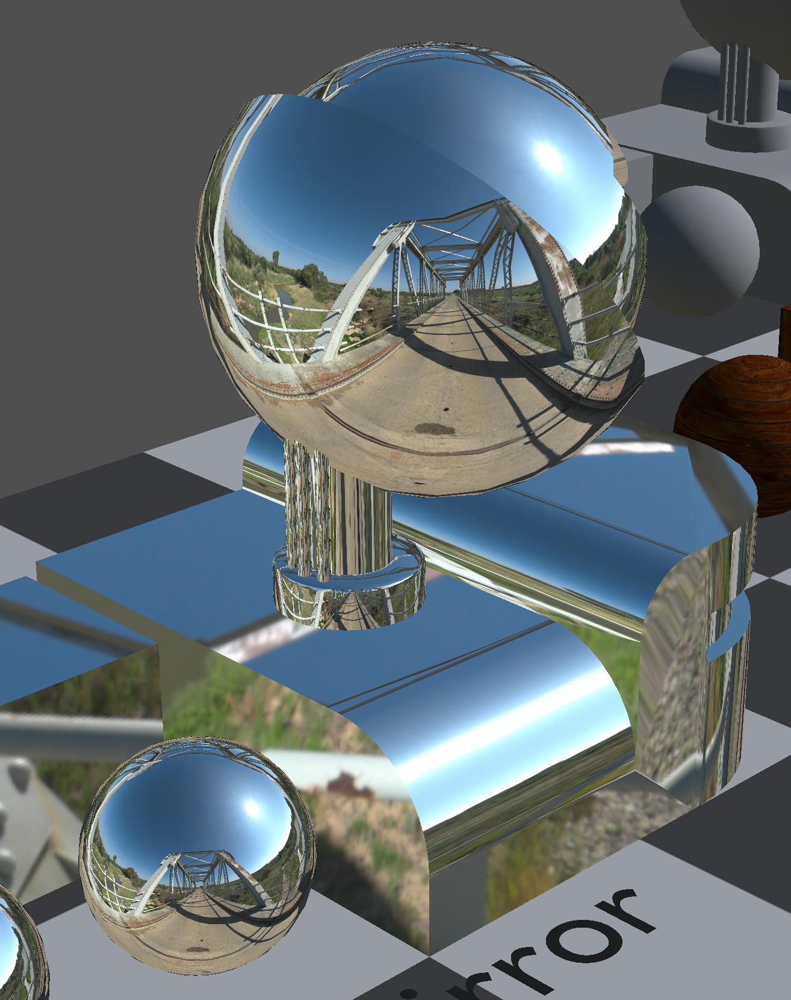
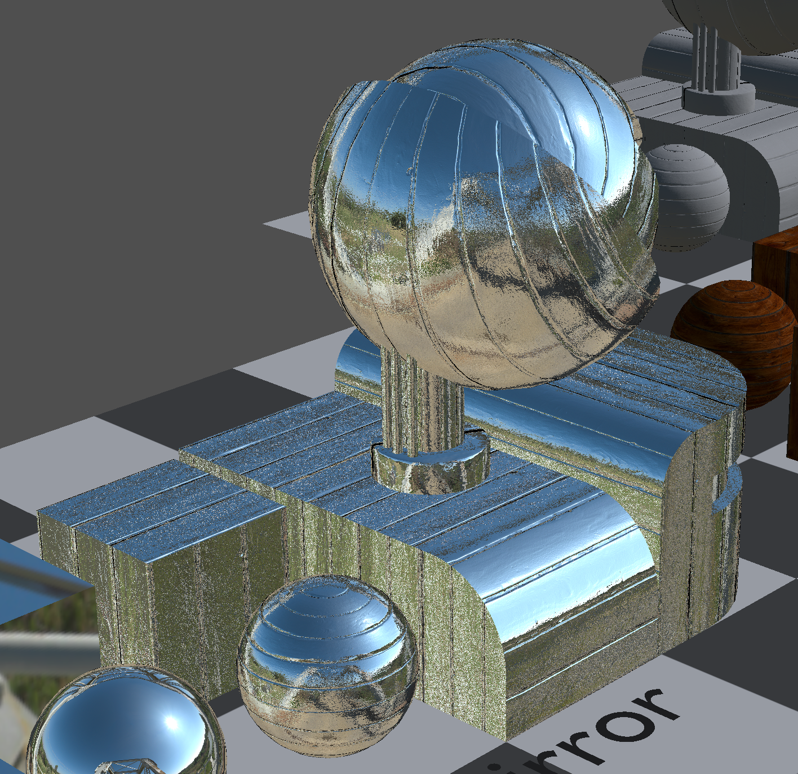
I highly doubt normal mapping introduced any significant performance impact since the only additional work during render is these 5 lines in the shader:
Similar operations are called quite a few more times in the shader for other purposes.
Loading the required textures for the material are done the same as all the other materials before.
I followed the implementation in
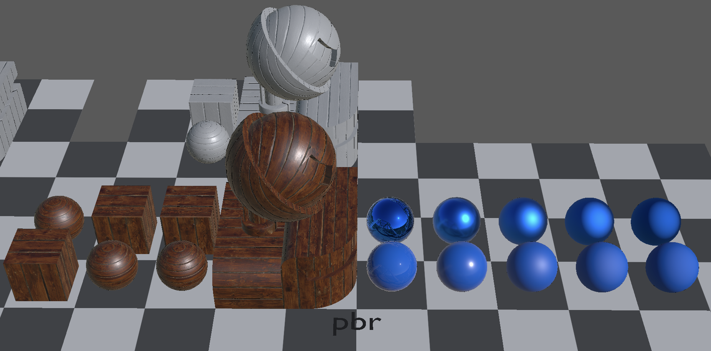
materials.s72 example scene.
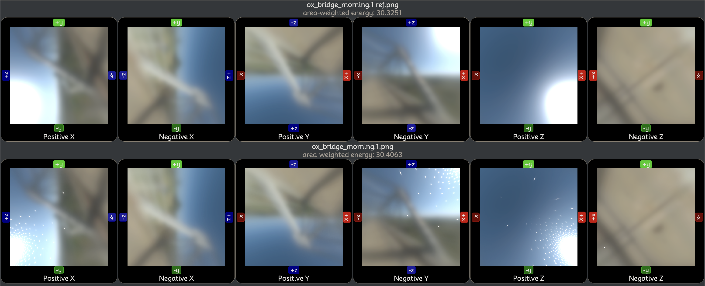
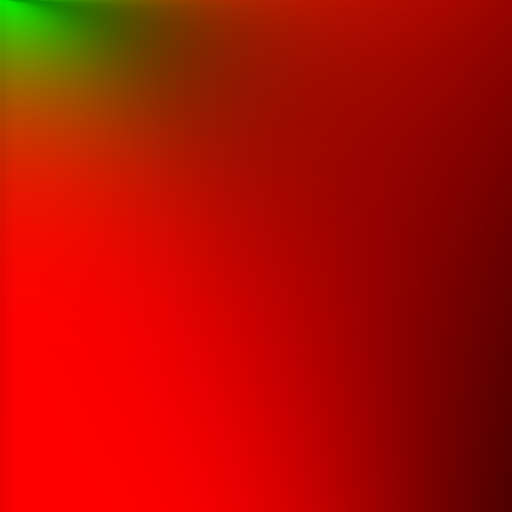
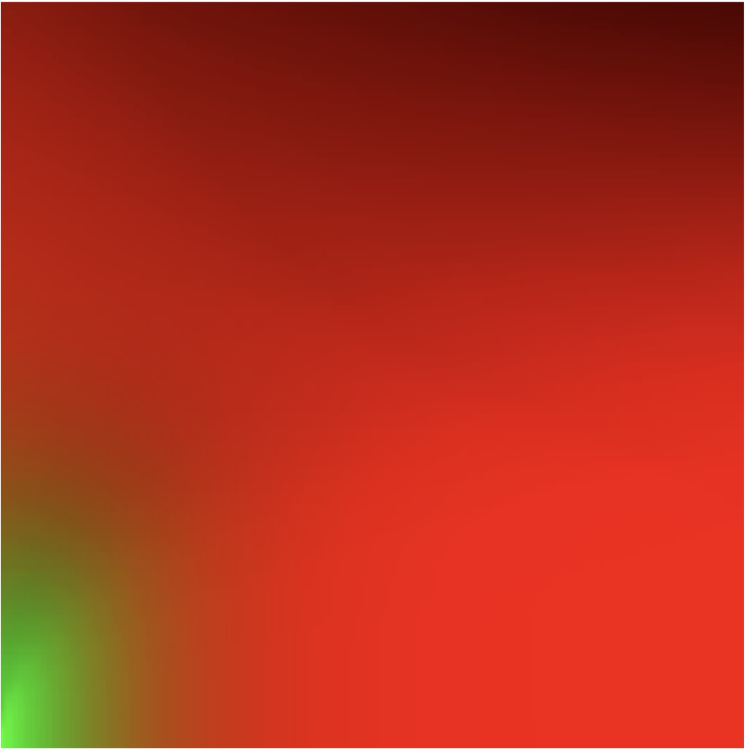